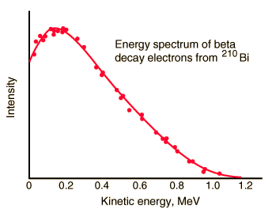
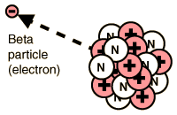

Energy and Momentum Spectra for Beta Decay
|  |
Beta emission has a characteristic energy spectrum. It is accompanied by the emission of an electron antineutrino which shares the momentum and energy of the decay. This experimental energy spectrum is from G. J. Neary, Roy. Phys. Soc. (London), A175, 71 (1940). |
From the Fermi theory of beta decay, the shape of the energy distribution for this "allowed" transition is given approximately by the expression
where F(Z',KEe) is called the Fermi function. It accounts for the nuclear coulomb interaction which shifts this distribution toward lower energies because of the coulomb attraction between the daughter nucleus and the emitted electron. (It shifts the distribution upward for positrons.) Q represnts the energy yield of the transition and as such is the upper bound on the kinetic energy of the electron, KEe. The apparent complexity of the expression is partly because it is necessary to use relativistic momentum for the electron.
| The emission of the electron's antiparticle, the positron, is also called beta decay. |  |
The nucleus 64Cu is a good example for momentum spectra since it decays by both electron (to 64Zn) and positron emission (to 64Ni) with comparable transition energies. The experimental spectra below are from J. R. Reitz, Phys. Rev. 77, 50 (1950). This allows you to see clearly that the momentum spectrum of the positron is shifted toward higher momentum by the coulomb repulsion of the nucleus.
From the Fermi theory of beta decay, the shape of the distributions for these "allowed" transitions is given approximately by the expression
where F(Z',p) is called the Fermi function. It accounts for the nuclear coulomb interaction and is the main source of the difference between the two curves above. Again, the expression looks a bit complex because the relativistic relationship between momentum and enegy must be used for beta decay.
Beta decay concepts
Reference
Cohen
Concepts of Nuclear Physics, Sec 11-1
| HyperPhysics***** Nuclear | R Nave |